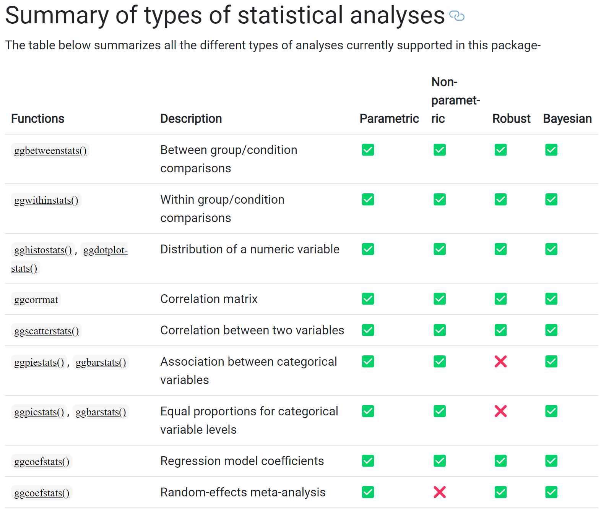
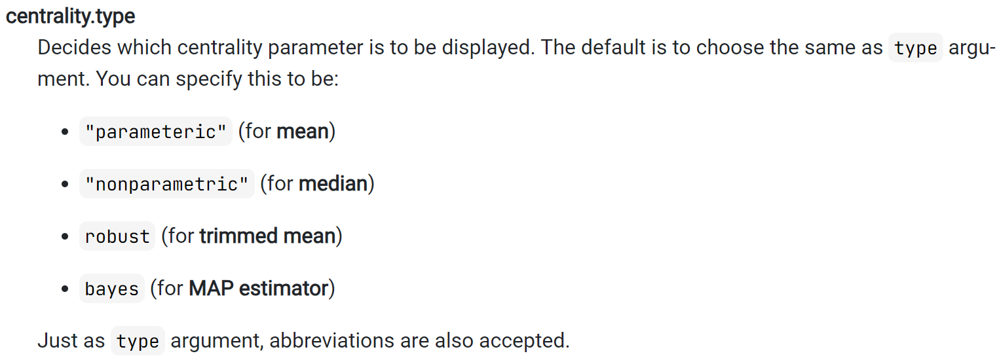
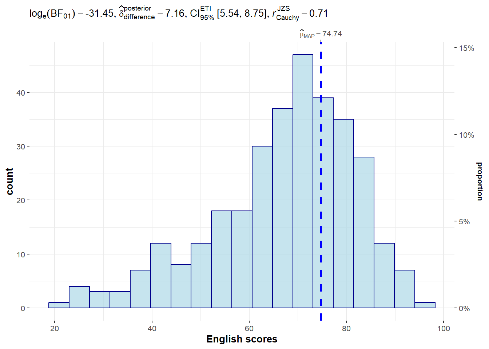
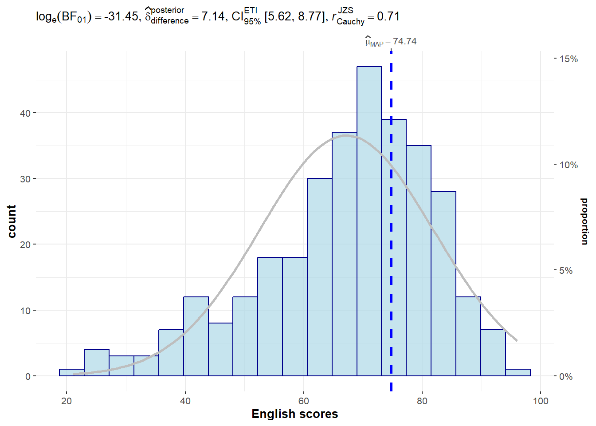
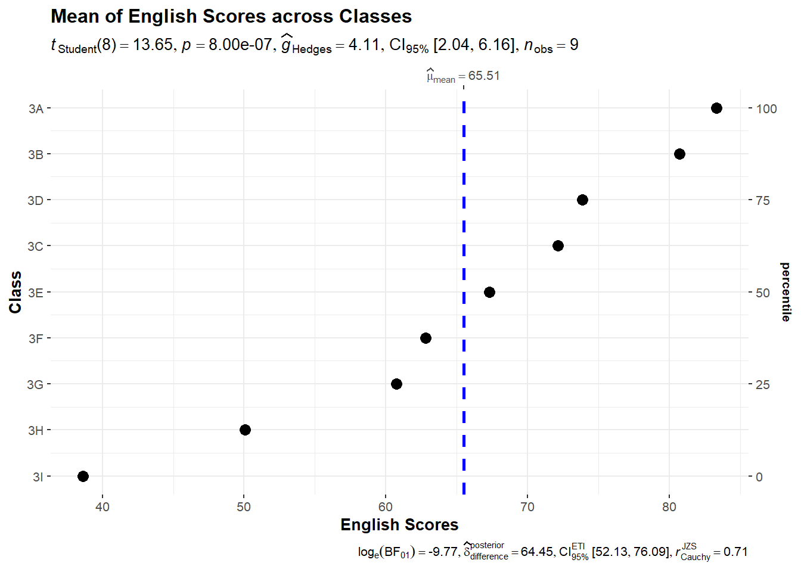
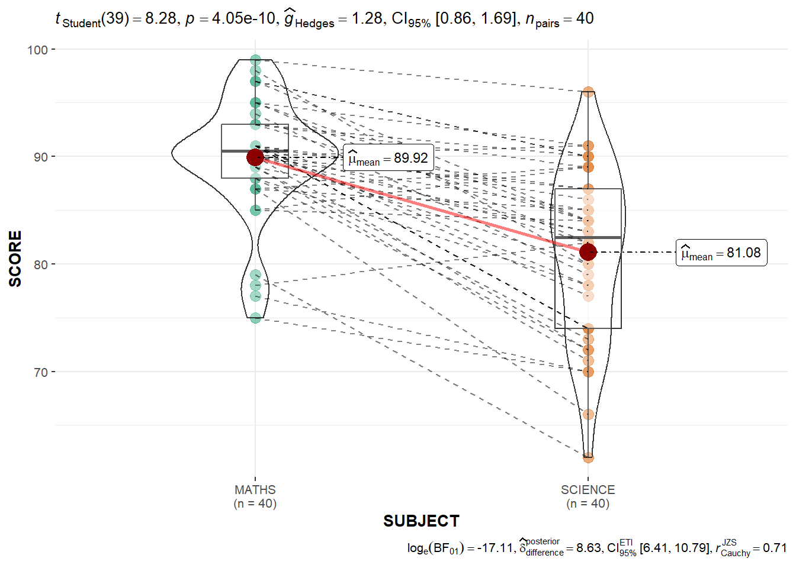
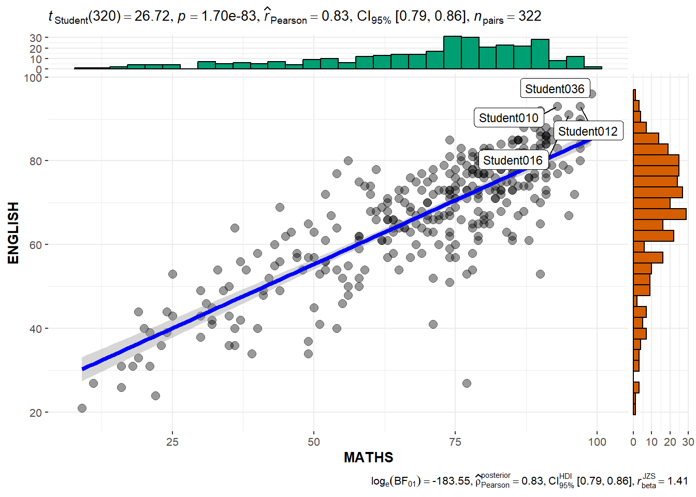
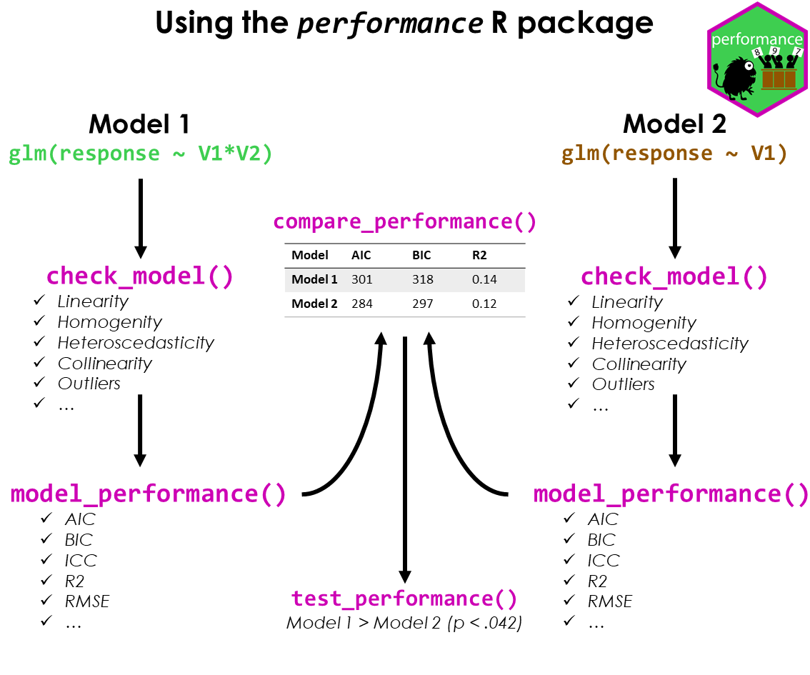
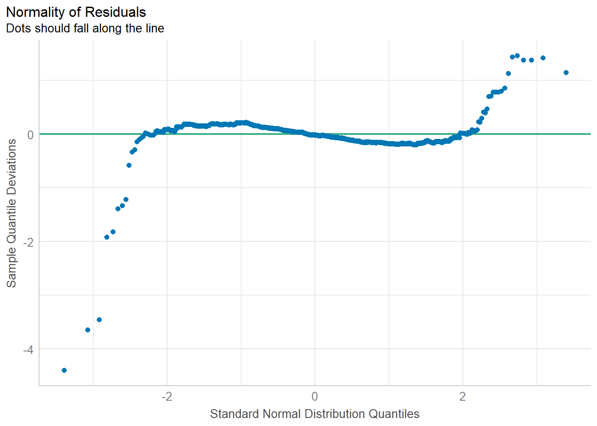
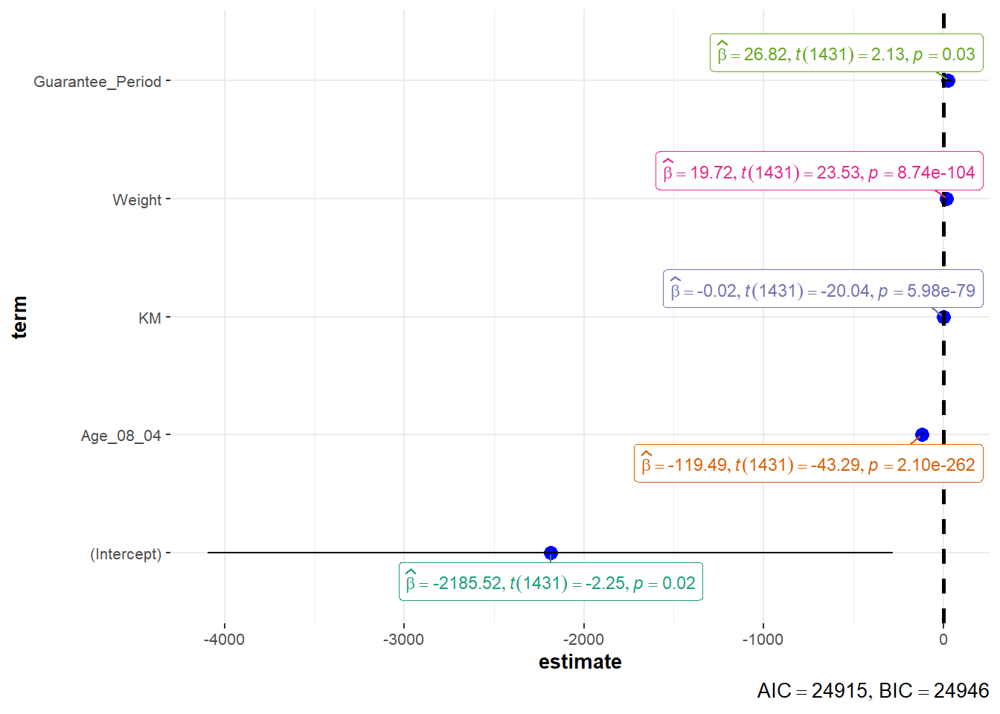

pacman::p_load(ggstatsplot, tidyverse)In Class Ex 4
Visual Statistics Analysis
1. Getting Started
exam <- read_csv("data/Exam_data.csv")2. ggstatsplot methods
We should set the random seed first.
set.seed(1234)Here we are able to combine both the visualisation and the statistical testing into one visualisation. The danger here is not knowing what is happening at the back end - hence it is necessary to understand the documentation.
Below is a summary of the analyses for ggstatsplot:

2.1 Makeover of Histogram Plot
The code chunk:
type- allow us to choose which test - whether parametric, nonparametric, robust or bayes- e.g. if you select np (non-parametric) - will auto select median instead of mean
test.value- number indicating the true value of the mean
p <- gghistostats(
data = exam,
x = ENGLISH,
type = "bayes",
test.value = 60,
conf.level = 0.95,
bin.args = list( color = "darkblue",
fill = "lightblue",
alpha = 0.7),
normal.curve = FALSE,
normal.curve.args = list(linewidth =2),
xlab = "English scores"
)
p
Extracting the stats from the plot:
extract_stats(p)$subtitle_data
# A tibble: 1 × 16
term effectsize estimate conf.level conf.low conf.high pd
<chr> <chr> <dbl> <dbl> <dbl> <dbl> <dbl>
1 Difference Bayesian t-test 7.16 0.95 5.54 8.75 1
prior.distribution prior.location prior.scale bf10 method
<chr> <dbl> <dbl> <dbl> <chr>
1 cauchy 0 0.707 4.54e13 Bayesian t-test
conf.method log_e_bf10 n.obs expression
<chr> <dbl> <int> <list>
1 ETI 31.4 322 <language>
$caption_data
NULL
$pairwise_comparisons_data
NULL
$descriptive_data
NULL
$one_sample_data
NULL
$tidy_data
NULL
$glance_data
NULL2.2 To show the Normal Distribution Curve
normal.curve- set to TRUE to show the curveand it also allows for further customisation
gghistostats(
data = exam,
x = ENGLISH,
type = "bayes",
test.value = 60,
conf.level = 0.95,
bin.args = list( color = "darkblue",
fill = "lightblue",
alpha = 0.7),
normal.curve = TRUE,
normal.curve.args = list(linewidth = 1,
color = "grey"),
xlab = "English scores"
)
2.3 Dot Plot
ggdotplotstats(
data = exam,
x = ENGLISH,
y= CLASS,
title = "Mean of English Scores across Classes",
xlab = "English Scores",
ylab = "Class"
)
Note
Notice that the classes are sorted according to their mean - here we notice that students in Class 3D perform better than Class 3C on average.
2.4 Within Sample Stats
exam_long <- exam %>%
pivot_longer(cols = c(MATHS, SCIENCE, ENGLISH),
names_to = "SUBJECT",
values_to = "SCORE") %>%
filter(CLASS == "3A")ggwithinstats(
data = filter(exam_long, SUBJECT %in% c("MATHS", "SCIENCE")),
x = SUBJECT,
y = SCORE,
type = "p",
messages = FALSE,
pairwise.display = "significant"
)
2.5 Scatterstats
marginal = TRUE- plotting the histogram/distribution by the sideslabel- to highlight the labels within the plots
g <- ggscatterstats(
data = exam,
x = MATHS,
y = ENGLISH,
marginal = TRUE,
label.var = ID,
label.expression = ENGLISH > 90 & MATHS > 90
)
g
extract_stats(g)$subtitle_data
# A tibble: 1 × 14
parameter1 parameter2 effectsize estimate conf.level conf.low
<chr> <chr> <chr> <dbl> <dbl> <dbl>
1 MATHS ENGLISH Pearson correlation 0.831 0.95 0.794
conf.high statistic df.error p.value method n.obs conf.method
<dbl> <dbl> <int> <dbl> <chr> <int> <chr>
1 0.862 26.7 320 1.70e-83 Pearson correlation 322 normal
expression
<list>
1 <language>
$caption_data
# A tibble: 1 × 17
parameter1 parameter2 effectsize estimate conf.level
<chr> <chr> <chr> <dbl> <dbl>
1 MATHS ENGLISH Bayesian Pearson correlation 0.829 0.95
conf.low conf.high pd rope.percentage prior.distribution prior.location
<dbl> <dbl> <dbl> <dbl> <chr> <dbl>
1 0.794 0.860 1 0 beta 1.41
prior.scale bf10 method n.obs conf.method expression
<dbl> <dbl> <chr> <int> <chr> <list>
1 1.41 5.21e79 Bayesian Pearson correlation 322 HDI <language>
$pairwise_comparisons_data
NULL
$descriptive_data
NULL
$one_sample_data
NULL
$tidy_data
NULL
$glance_data
NULL3. Visualising Models
- performance is part of the package under easystats
pacman::p_load(readxl, performance, parameters, see)
3.1 Importing data
Using read_xl to import excel data
- can specify the specific worksheet or row/columns
car_resale <- read_xls("data/ToyotaCorolla.xls",
"data")
car_resale# A tibble: 1,436 × 38
Id Model Price Age_08_04 Mfg_Month Mfg_Year KM Quarterly_Tax Weight
<dbl> <chr> <dbl> <dbl> <dbl> <dbl> <dbl> <dbl> <dbl>
1 81 TOYOTA … 18950 25 8 2002 20019 100 1180
2 1 TOYOTA … 13500 23 10 2002 46986 210 1165
3 2 TOYOTA … 13750 23 10 2002 72937 210 1165
4 3 TOYOTA… 13950 24 9 2002 41711 210 1165
5 4 TOYOTA … 14950 26 7 2002 48000 210 1165
6 5 TOYOTA … 13750 30 3 2002 38500 210 1170
7 6 TOYOTA … 12950 32 1 2002 61000 210 1170
8 7 TOYOTA… 16900 27 6 2002 94612 210 1245
9 8 TOYOTA … 18600 30 3 2002 75889 210 1245
10 44 TOYOTA … 16950 27 6 2002 110404 234 1255
# ℹ 1,426 more rows
# ℹ 29 more variables: Guarantee_Period <dbl>, HP_Bin <chr>, CC_bin <chr>,
# Doors <dbl>, Gears <dbl>, Cylinders <dbl>, Fuel_Type <chr>, Color <chr>,
# Met_Color <dbl>, Automatic <dbl>, Mfr_Guarantee <dbl>,
# BOVAG_Guarantee <dbl>, ABS <dbl>, Airbag_1 <dbl>, Airbag_2 <dbl>,
# Airco <dbl>, Automatic_airco <dbl>, Boardcomputer <dbl>, CD_Player <dbl>,
# Central_Lock <dbl>, Powered_Windows <dbl>, Power_Steering <dbl>, …model <- lm(Price ~ Age_08_04 + Mfg_Year + KM +
Weight + Guarantee_Period, data = car_resale)
model
Call:
lm(formula = Price ~ Age_08_04 + Mfg_Year + KM + Weight + Guarantee_Period,
data = car_resale)
Coefficients:
(Intercept) Age_08_04 Mfg_Year KM
-2.637e+06 -1.409e+01 1.315e+03 -2.323e-02
Weight Guarantee_Period
1.903e+01 2.770e+01 check_c <- check_collinearity(model)
plot(check_c)
By looking at the plot - we can see that the Age and the Mfg_year are highly correlated - and hence we need to exclude on of them. Here, we use a simple visualisation to help us to see instead of looking through a table.
model1 <- lm(Price ~ Age_08_04 + KM +
Weight + Guarantee_Period, data = car_resale)
check_n <- check_normality(model1)
plot(check_n)
plot(parameters(model1))
Similarly, we can use the ggcoefstats:
ggcoefstats(model1,
output = "plot")
4. Funnel Plots
pacman::p_load(tidyverse, FunnelPlotR, plotly, knitr)WHdata <- read_csv("data/WHData-2018.csv") %>%
mutate_if(is.character, as.factor)